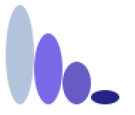

Tema 3: Procedimientos recursivos¶
Ya hemos visto muchos ejemplos de funciones recursivas. Una función es recursiva cuando se llama a si misma. Una vez que uno se acostumbra a su uso, se comprueba que la recursión es una forma mucho más natural que la iteración de expresar un gran número de funciones y procedimientos.
La formulación matemática de la recursión es sencilla de entender, pero su implementación en un lenguaje de programación no lo es tanto. El primer lenguaje de programación que permitió el uso de expresiones recursivas fue el Lisp. En el momento de su creación existía ya el Fortran, que no permitía que una función se llamase a si misma.
Ya hemos visto la utilidad de la recursión en muchos ejemplos para recorrer listas, para filtrarlas, etc. En este tema veremos algunos aspectos negativos de la recursión: su coste espacial y temporal. Veremos que hay soluciones a estos problemas, cambiando el estilo de la recursión y generando procesos iterativos o usando un enfoque automático llamado memoization en el que se guardan los resultados de cada llamada recursiva. Por último, veremos un último ejemplo curioso e interesante de la recursión para realizar figuras fractales con la librería gráfica de Racket.
1. El coste de la recursión¶
Hasta ahora hemos estudiado el diseño de funciones recursivas. Vamos a tratar por primera vez su coste. Veremos que hay casos en los que es prohibitivo utilizar la recursión tal y como la hemos visto. Y veremos también que existen soluciones para esos casos.
1.1. La pila de la recursión¶
Vamos a estudiar el comportamiento de la evaluación de una llamada a
una función recursiva. Supongamos la función
mi-length:
(define (mi-length items)
(if (null? items)
0
(+ 1 (mi-length (rest items)))))
Examinamos cómo se evalúan las llamadas recursivas:
(mi-length '(a b c d))
(+ 1 (mi-length '(b c d)))
(+ 1 (+ 1 (mi-length '(c d))))
(+ 1 (+ 1 (+ 1 (mi-length '(d)))))
(+ 1 (+ 1 (+ 1 (+ 1 (mi-length '())))))
(+ 1 (+ 1 (+ 1 (+ 1 0))))
(+ 1 (+ 1 (+ 1 1)))
(+ 1 (+ 1 2))
(+ 1 3)
4
Cada llamada a la recursión deja una función en espera de ser evaluada cuando la recursión devuelva un valor (en el caso anterior las funciones suma). Estas llamadas en espera, junto con sus argumentos, se almacenan en la pila de la recursión.
Cuando la recursión devuelve un valor, los valores se recuperan de la pila, se realiza la llamada y se devuelve el valor a la anterior llamada en espera.
Si la recursión está mal hecha y nunca termina se genera un stack overflow porque la memoria que se almacena en la pila sobrepasa la memoria reservada para el intérprete DrRacket.
1.2. Coste espacial de la recursión¶
El coste espacial de un programa es una función que relaciona la memoria consumida por una llamada para resolver un problema con alguna variable que determina el tamaño del problema a resolver.
En el caso de la función mi-length el tamaño del problema viene dado
por la longitud de la lista. El coste espacial de mi-lenght es
O(n), siendo n la longitud de la lista.
1.3. El coste depende del número de llamadas a la recursión¶
Veamos con un ejemplo que el coste de las llamadas recursivas puede dispararse. Supongamos la famosa secuencia de Fibonacci: 0,1,1,2,3,5,8,13,...
Formulación matemática de la secuencia de Fibonacci:
Fibonacci(n) = Fibonacci(n-1) + Fibonacci(n-2)
Fibonacci(0) = 0
Fibonacci(1) = 1
Formulación recursiva en Scheme:
(define (fib n)
(cond ((= n 0) 0)
((= n 1) 1)
(else (+ (fib (- n 1))
(fib (- n 2))))))
Evaluación de una llamada a Fibonacci:

Cada llamada a la recursión produce otras dos llamadas, por lo que el número de llamadas finales es 2^n siendo n el número que se pasa a la función.
El coste espacial y temporal es exponencial, O(2^n). Esto hace
inviable utilizar esta implementación para realizar el cálculo de la
función. Puedes comprobarlo intentando evaluar en el intérprete
(fib 35).
2. Soluciones al coste de la recursión: procesos iterativos¶
Diferenciamos entre procedimientos y procesos: un procedimiento es un algoritmo y un proceso es la ejecución de ese algoritmo.
Es posible definir procedimientos recursivos que generen procesos iterativos (como los bucles en programación imperativa) en los que no se dejen llamadas recursivas en espera ni se incremente la pila de la recursión. Para ello construimos la recursión de forma que en cada llamada se haga un cálculo parcial y en el caso base se pueda devolver directamente el resultado obtenido.
Este estilo de recursión se denomina recursión por la cola (tail recursion, en inglés).
Se puede realizar una implementación eficiente de la ejecución del proceso, eliminando la pila de la recursión.
2.1. Factorial iterativo¶
Empezamos a explicar la recursión por la cola con un ejemplo muy
sencillo: la versión iterativa de la típica función factorial. Le
pondremos de nombre a la función factorial-iter:
(define (factorial n)
(fact-iter n n))
(define (fact-iter n result)
(if (= n 1)
result
(fact-iter (- n 1) (* result (- n 1)) )))
La función (fact-iter n result) es la que define el proceso
iterativo. Su argumento n es el valor del que hay que calcular el
factorial y el argumento result es un parámetro adicional en el que
se van guardando los resultados intermedios.
En cada llamada recursiva, n se va haciendo cada vez más pequeño y
en result se va acumulando el cálculo del factorial. Al final de la
recursión el factorial debe estar calculado en result y se devuelve.
Veamos la secuencia de llamadas:
(factorial 4)
(factorial-iter 4 4)
(factorial-iter 3 4*3=12)
(factorial-iter 2 12*2=24)
(factorial-iter 1 24*1=24)
24
Antes de realizar cada llamada recursiva se realiza el cálculo del
resultado parcial, que se guarda en el parámetro result. Después se
realiza la llamada con el nuevo valor calculado de n y de result.
Al final, cuando n vale 1 se devuelve el valor calculado de
result. Este valor es el resultado completo de la recursión, ya que
no hay que hacer ninguna operación más con él. A diferencia de los
procesos recursivos, en los que se quedan llamadas en espera en la
pila de la recursión, en los procesos iterativos no hay ninguna
llamada en espera. El resultado devuelto por el caso base es
directamente la solución de la recursión, no queda nada por hacer con
este resultado.
Es importante el valor inicial de resultado. La función factorial
se encarga de inicializar este parámetro. En este caso es el mismo
valor del número n a calcular el factorial.
La secuencia de llamadas recursivas acumula en la variable result el
valor del factorial:
4 * 3 * 2 * 1 = 24
2.2. Versión iterativa de mi-length¶
Veamos un segundo ejemplo. ¿Cómo sería la versión iterativa de
mi-length, la función que calcula la logitud de una lista?.
Tenemos que añadir un parámetro adicional en el que iremos acumulando el resultado parcial. En este caso, cada vez que llamemos a la recursión eliminado un elemento de la lista, incrementaremos en 1 el valor del resultado. Para que funcione bien este enfoque, debemos inicializar este resultado a 0.
La solución es la siguiente:
(define (mi-length lista)
(mi-length-iter lista 0))
(define (mi-length-iter lista result)
(if (null? lista)
result
(mi-length-iter (rest lista) (+ result 1))))
Fijaros que, al igual que en la versión iterativa de factorial, no hay ninguna llamada a ningúna función que recoja el resultado de la llamada recursiva y haga algo con él. Directamente el resultado de la llamada recursiva es el resultado final de la recursión.
2.3. Función suma-lista usando recursión por la cola¶
Veamos otro ejemplo. Supongamos que queremos calcular usando recursión por la cola la suma de los números de una lista.
Deberíamos añadir un parámetro adicional en el que vamos acumulando esa suma. Inicializaremos a 0 ese parámetro e iremos en cada llamada recursiva acumulando el primer elemento de la lista:
(define (suma-lista lista)
(suma-lista-iter lista 0))
(define (suma-lista-iter lista result)
(if (null? lista)
result
(suma-lista-iter (rest lista) (+ result (first lista)))))
2.4. Características de los procesos iterativos¶
Un resumen de las características de los procesos iterativos resultantes de hacer una recursión por la cola:
- La recursión resultante es menos elegante.
- Se necesita una parámetro adicional en el que se van acumulando los resultados parciales.
- La última llamada a la recursión devuelve el valor acumulado.
- El proceso resultante de la recursión es iterativo en el sentido de que no deja llamadas en espera ni incurre en coste espacial.
2.5. Fibonacci iterativo¶
Cualquier programa recursivo se puede transformar en otro que genera un proceso iterativo.
En general, las versiones iterativas son menos intuitivas y más difíciles de entender y depurar.
Veamos, por ejemplo, la formulación iterativa de Fibonacci:
(define (fib n)
(fib-iter 1 0 n))
(define (fib-iter a b count)
(if (= count 0)
b
(fib-iter (+ a b) a (- count 1))))
La secuencia de llamadas recursivas sería la siguiente:
(fib 6)
(fib-iter 1 0 6)
(fib-iter 1+0=1 1 5)
(fib-iter 1+1=2 1 4)
(fib-iter 2+1=3 2 3)
(fib-iter 3+2=5 3 2)
(fib-iter 5+3=8 5 1)
(fib-iter 8+5=13 8 0)
8
En la llamada recursiva n, el parámetro a guarda el valor de
fibonacci n+1 y el parámetro b guarda el valor de fibonacci n,
que es el que se devuelve. Conseguimos n llamadas inicializando
count a n y decrementando el parámetro en 1 cada vez.
2.6. Triángulo de Pascal¶
El triángulo de Pascal es el siguiente triángulo de números.
1
1 1
1 2 1
1 3 3 1
1 4 6 4 1
1 5 10 10 5 1
1 6 15 20 15 6 1
1 7 21 35 35 21 7 1
...
Si numeramos las filas y columnas empezando a contar por 0, la expresión general del valor en una fila y columna determinada se puede obtener con la siguiente definición recursiva:
Pascal (n, 0) = 1
Pascal (n, n) = 1
Pascal (fila, columna) =
Pascal (fila-1,columna-1) + Pascal (fila-1, columna)
La función sólo está definida para valores de columna menores o
iguales que fila.
En Scheme es fácil escribir una función recursiva que implemente la definición anterior:
(define (pascal fila col)
(cond ((= col 0) 1)
((= col fila) 1)
(else (+ (pascal (- fila 1) (- col 1))
(pascal (- fila 1) col) ))))
(pascal 4 2)
; ⇒ 6
(pascal 8 4)
; ⇒ 70
(pascal 27 13)
; ⇒ 20058300
Hay que llamar a la función con un valor de col menor o igual que
fila. En el caso en que se pase un valor col mayor que fila la
recursión no termina y se entra en un bucle infinito.
La función tiene una formulación sencilla y funciona
correctamente. Sin embargo, el coste de esta recursión es también
exponencial, igual que pasaba en el caso de la secuencia de
fibonacci. Por ejemplo, la última expresión (pascal 27 13) tarda un
buen rato en devolver el resultado. Sería imposible calcular el valor
de números de Pascal un poco más grandes, como (pascal 40 20).
Veamos cómo se puede conseguir una versión iterativa.
La idea es definir una función iterativa pascal-fila a la que le
pasamos el número de fila n y nos devuelve la lista de n+1 números que
constituyen la fila n del triángulo de Pascal:
fila 0 = (1)
fila 1 = (1 1)
fila 2 = (1 2 1)
fila 3 = (1 3 3 1)
fila 4 = (1 4 6 4 1)
...
Esta función necesitará un parámetro adicional (lista-fila) que se
inicializa con la lista (1) y en el que se va guardando cada fila
sucesiva. Esta fila va creciendo hasta que llegamos a la fila que
tenemos que devolver. Hay que hacer la iteración n veces, por lo que
vamos decrementando el parámetro n hasta que se llega a 0.
Para implementar esta función usamos otra llamada (pascal-sig-fila
lista-fila) que recibe una fila del triángulo y devuelve la
siguiente.
Por ejemplo:
(pascal-sig-fila '(1 3 3 1))
; ⇒ (1 4 6 4 1)
Esta función la implementamos con una función recursiva auxiliar (esta
es recursiva pura) llamada (pascal-suma-dos-a-dos lista-fila) que es
la que se encarga de realizar el cálculo de la nueva fila. No es
necesario convertir esta función a iterativa porque no genera un coste
exponencial.
El código completo es el siguiente:
(define (pascal fila col)
(list-ref (pascal-fila '(1) fila) col))
(define (pascal-fila lista-fila n)
(if (= 0 n)
lista-fila
(pascal-fila (pascal-sig-fila lista-fila) (- n 1))))
(define (pascal-sig-fila lista-fila)
(append '(1)
(pascal-suma-dos-a-dos lista-fila)
'(1)))
(define (pascal-suma-dos-a-dos lista-fila)
(if (null? (rest lista-fila))
'()
(cons (+ (first lista-fila) (second lista-fila))
(pascal-suma-dos-a-dos (rest lista-fila)))))
Con esta implementación ya no se tiene un coste exponencial y se puede calcular el valor de números como Pascal(40, 20):
(pascal 40 20)
; ⇒ 137846528820
3. Soluciones al coste de la recursión: memoization¶
Una alternativa que mantiene la elegancia de los procesos recursivos y
la eficiencia de los iterativos es la
memoization. Si miramos la
traza de (fib 4) podemos ver que el coste está producido por
la repetición de llamadas; por ejemplo (fib 3) se evalúa 2
veces.
En programación funcional la llamada a (fib 3) siempre va a
devolver el mismo valor.
La idea de la memoization es guardar el valor devuelto por la cada llamada en alguna estructura (una lista de asociación, por ejemplo) y no volver a realizar la llamada a la recursión las siguientes veces.
3.1. Fibonacci con memoization¶
Para implementar la memoization necesitamos usar un diccionario con
los métodos put y get que actualizan su información con mutación.
- La función
(make-dic)devuelve un diccionario vacío. - La función
(put key value dic)asocia un valor a una clave, la guarda en el diccionario (con mutación) y devuelve el valor. - La función
(get key dic)devuelve el valor del diccionario asociado a una clave (si no existe devuelve#f). - El predicado
(key-exists? key dic)devuelve#fen que no exista la clave y#tsi existe.
Ejemplos:
(define mi-dic (make-dic))
(put 1 10 mi-dic) ; ⇒ 10
(get 1 mi-dic) ; ⇒ 10
(key-exists? 2 dic) ; ⇒ #f
Estos métodos son imperativos porque modifican (mutan) la estructura
de datos que pasamos como parámetro (no pertenecen al paradigma funcional). La implementación de estas
funciones está incluidas en el fichero
lpp.rkt.
La función fib-memo realiza el cálculo de la serie de Fibonacci
utilizando exactamente la misma definición recursiva original, pero
añadiendo la técnica de memoization: lo primero que hacemos para
calcular el número de fibonacci n, antes de llamar a la recursión,
es comprobar si está ya guardado en la lista de asociación. En el caso
en que esté, lo devolvemos. Sólo cuando el número no está calculado
llamamos a la recursión para calcularlo.
La implementación se muestra a continuación. Vemos que para devolver
el número de fibonacci n se comprueba si ya está guardado en la
lista. Sólo en el caso en que no esté guardado se llama a la recursión
para calcularlo y guardarlo. La función put que guarda el nuevo
valor calculado también lo devuelve.
(define (fib-memo n dic)
(cond ((= n 0) 0)
((= n 1) 1)
((key-exists? n dic) (get n dic))
(else (put n (+ (fib-memo (- n 1) dic)
(fib-memo (- n 2) dic)) dic))))
Podemos comprobar la diferencia de tiempos de ejecución entre esta versión y la anterior. El coste de la función memoizada es O(n). Frente al coste O(2^n) de la versión inicial que la hacía imposible de utilizar.
(fib-memo 200 lista)
⇒ 280571172992510140037611932413038677189525
4. Figuras recursivas¶
Vamos a terminar el apartado sobre procedimientos recursivos con un
último ejemplo algo distinto de los vistos hasta ahora. Usaremos la
recursión para dibujar figuras fractales usando la librería de imágenes de
Racket 2htdp/image.
4.1. Librería de imágenes de Racket¶
Racket incluye una librería de imágenes en la que se proporcionan funciones para construir imágenes. Con esta librería se pueden crear imágenes sencillas como rectas, círculos, triángulos u otras figuras geométricas. También se pueden modificar las imágenes creadas, rotándolas o escalándolas, y formar otras imágenes mediante la combinación de imagenes básicas.
Construcción de imágenes básicas¶
Veamos algunos ejemplos de las primitivas de la librería para construir imágenes básicas.
Podemos obtener un círculo, un cuadrado, un rectángulo y un triángulo equilátero de la siguiente forma:
#lang racket
(require 2htdp/image)
(circle 30 "solid" "blue")
(square 30 "outline" "black")
(rectangle 80 40 "solid" "gray")
(triangle 40 "solid" "red")
Cada instrucción construye la imagen correspondiente. Si lo ejecutamos en el intérprete obtendremos lo siguiente:

Las imágenes son mapas de bits y su tamaño se expresa en píxeles. En el caso del círculo se trata del radio, para el cuadrado indicamos su lado, para el rectángulo la base y la altura y para el triángulo equilátero su lado.
Debemos indicar también si queremos que la imagen se rellene de forma sólida o se dibuje solo el borde. Y también su color, mediante una cadena escogida de una lista de colores permitidos.
Podemos también construir un triángulo isósceles indicando la longitud de sus lados iguales y el ángulo entre ellos:
(isosceles-triangle 60 30 "outline" "black")

Por último, otra primitiva que vamos a utilizar más adelante es un trazo de una línea:
(line 30 30 "black")

Esta función construye una imagen con una línea hasta la posición (30,30) (la coordenada x crece hacia la derecha y la y hacia abajo).
Prueba a construir algunas imágenes usando los comandos anteriores y cambiando sus parámetros.
Operaciones y combinaciones de imágenes¶
En la librería de imágenes se definen también funciones que permiten transformar y combinar imágenes. Vamos a ver algunos de ellas.
Podemos rotar una imagen un ángulo, expresado en grados sexagesimales en el sentido contrario de las agujas del reloj.
Por ejemplo, podemos rotar el triángulo isósceles anterior:
(define triangulo (isosceles-triangle 60 30 "outline" "black"))
(rotate 90 triangulo)
; ⇒ imagen rotada 90 grados en sentido contrario a las agujas del reloj
(rotate -90 triangulo)
; ⇒ imagen rotada 90 grados en sentido de las agujas del reloj

Podemos también combinar imágenes, agrupándolas con las funciones
above y beside. Las dos funciones reciben un número variable de
argumentos y devuelven una nueva imagen en la que las imágenes se han
colocado unas sobre otras o unas al lado de otras.
Por ejemplo:
(above (ellipse 70 20 "solid" "gray")
(ellipse 50 20 "solid" "darkgray")
(ellipse 30 20 "solid" "dimgray")
(ellipse 10 20 "solid" "black"))
La llamada anterior devuelve la siguiente imagen:

Otro ejemplo:
(beside (ellipse 20 70 "solid" "gray")
(ellipse 20 50 "solid" "darkgray")
(ellipse 20 30 "solid" "dimgray")
(ellipse 20 10 "solid" "black"))
Que produce:

En los dos ejemplos anteriores las imágenes agrupadas se alinean en el
centro. Si queremos otra alineación podemos especificarla usando las
funciones above/align y beside/align.
En el caso de above, que acumula las imágenes unas sobre otras,
podremos especificar si queremos alinearlas a la izquierda o a la
derecha:
(above/align "left"
(ellipse 70 20 "solid" "yellowgreen")
(ellipse 50 20 "solid" "olivedrab")
(ellipse 30 20 "solid" "darkolivegreen")
(ellipse 10 20 "solid" "darkgreen"))

(above/align "right"
(ellipse 70 20 "solid" "gold")
(ellipse 50 20 "solid" "goldenrod")
(ellipse 30 20 "solid" "darkgoldenrod")
(ellipse 10 20 "solid" "sienna"))

En el caso de beside, que acumula las imágenes unas junto a otras,
podemos especificar si queremos alinearla arriba o abajo:
(beside/align "top"
(ellipse 20 70 "solid" "mediumorchid")
(ellipse 20 50 "solid" "darkorchid")
(ellipse 20 30 "solid" "purple")
(ellipse 20 10 "solid" "indigo"))
(beside/align "bottom"
(ellipse 20 70 "solid" "lightsteelblue")
(ellipse 20 50 "solid" "mediumslateblue")
(ellipse 20 30 "solid" "slateblue")
(ellipse 20 10 "solid" "navy"))

Podemos combinar todas las funciones anteriores para construir figuras complejas. Por ejemplo:
(rotate 45
(above (triangle 40 "solid" "orange")
(beside (rectangle 40 30 "solid" "black")
(rectangle 40 30 "solid" "olivedrab"))))
Prueba a realizar algunas figuras combinando figuras básicas con las funciones anteriores.
4.2. Triángulo de Sierpinski¶
Vamos a utilizar las funciones anteriores que construyen imágenes para construir una figura fractal, el denominado riángulo de Sierpinski, usando la recursión.

Triángulo de Sierpinski
- ¿Ves alguna recursión en la figura?
- ¿Cuál podría ser el parámetro de la función que la dibujara?
- ¿Se te ocurre un algoritmo recursivo que la dibuje, usando las funciones de combinación de imágenes vistas?
La figura es autosimilar (una característica de las figuras fractales). Una parte de la figura es idéntica a la figura total, pero reducida de escala. Esto nos da una pista de que es posible dibujar la figura con un algoritmo recursivo.
Para intentar encontrar una forma de enfocar el problema, vamos a pensarlo de la siguiente forma: supongamos que tenemos tres triángulos de Sierpinski de anchura x. ¿Cómo podríamos construir el triángulo de Sierpinski de anchura 2*x?
Lo podríamos hacer combinando las tres imágenes de la siguiente forma:
- Juntamos 2 triángulos uno junto a otro.
- Sobre la figura resultante colocamos (alineada en el centro) el triángulo restante.
En la siguiente figura se muestra el esquema de esta combinación. Cada rectángulo representa la imagen de sierpinski de anchura x y la combinación representa la imagen de anchura 2*x.

El algoritmo recursivo se basa en la misma idea, pero hacia atrás. Dibujamos un triángulo de anchura x basándonos en 3 llamadas recursivas a triángulos más pequeños (de anchura x/2).
En el caso base, cuando x sea menor que un umbral h, dibujaremos un triángulo elemental de base h.
Veamos cómo hacerlo con la librería de imágenes de Racket.
4.2.1. Caso base de la recursión¶
Para construir la imagen elemental del triángulo de Sierpinski necesitamos un triángulo isósceles de ángulo 90 y base h.
Tal y como muestra la siguiente figura, podemos dividir este triángulo en dos mitades. Si el ángulo superior es 90 grados, su mitad será de 45 grados, por lo que los dos subtriángulos serán triángulos rectángulos cuyos catetos medirán h/2. La hipotenusa de esos triángulos son los lados del triángulo isósceles original. La altura del triángulo isósceles original será también h/2.

La hipotenusa de un triángulo rectángulo con dos catetos de longitud x se calcula con la siguiente expresión:
Lo podemos expresar en Racket:
(define (hipotenusa x)
(* x (sqrt 2)))
Una vez definida la función hipotenusa podemos dibujar el triángulo
de Sierpinski elemental de base h. Será un triángulo isósceles de
ángulo 90 grados y de longitud de lado hipotenusa(h/2):
(define (sierpinski-elem base)
(isosceles-triangle (hipotenusa (/ base 2)) 90 "outline" "black"))
Por ejemplo, la llamada a
(sierpinski-elem 40)
produce la siguiente imagen:

4.2.2. Caso general de la recursión¶
El caso general de la recursión para dibujar el triángulo de Sierpinski de ancho x se construye llamando a la recursión para que construya el triángulo de ancho x/2 y componiendo la imagen resultante con el patrón visto anteriormente.
El código de la función completa es el siguiente:
(define (sierpinski ancho)
(if (< ancho 10)
(sierpinski-elem ancho)
(above (sierpinski (/ ancho 2))
(beside (sierpinski (/ ancho 2))
(sierpinski (/ ancho 2))))))
- Si el ancho es menor que un umbral (10) se dibuja el triángulo elemental.
- Si el ancho es mayor o igual a 10 se hacen tres llamadas recursivas a
sierpienskicon el ancho / 2. Cada llamada recursiva devolverá la imagen con el triángulo de sierpinski más pequeño. - La llamada a
besidejuntará las dos imágenes inferiores. - La llamada a
abovecolocará el tercer triángulo sobre la composición anterior, centrado en el centro.
Un ejemplo de la ejecución:

El código anterior no es nada eficiente porque cada llamada recursiva genera a su vez otras 3 llamadas, provocando un coste exponencial como hemos visto al comienzo del tema.
En este caso es muy sencillo eliminar las tres llamadas porque las tres son llamadas repetidas que van a devolver exactamente la misma figura. Podemos entonces usar la técnica que ya hemos usado otras veces de llamar a una función auxiliar con el resultado de la recursión. Esta función auxiliar recogerá en su parámetro el valor devuelto por la recursión y realizará con ese valor las operaciones necesarias.
En este caso, el valor obtenido por la recursión es la figura de Serpienski más pequeña. La función auxiliar recibirá entonces esa figura y deberá combinarla tres veces para formar la figura de Sierpinski mayor.
El código resultante es el siguiente:
(define (componer-sierpinski figura)
(above figura
(beside figura figura)))
(define (sierpinski ancho)
(if (< ancho 10)
(sierpinski-elem ancho)
(componer-sierpinski (sierpinski (/ ancho 2)))))
4.3. Curva de Hilbert¶
La curva de Hilbert es una curva fractal que tiene la propiedad de rellenar completamente el plano.
Su dibujo tiene una formulación recursiva:

La imagen H2 se puede componer a partir de cuatro imágenes H1 siguiendo un patrón. Es el mismo patrón con el que se puede componer la imagen H3 a partir de cuatro imágenes H2.
El patrón se muestra en la siguiente función (componer-hilbert imagen):
(define (trazo-horizontal long)
(line long 0 "black"))
(define (trazo-vertical long)
(rotate 90 (trazo-horizontal long)))
(define (componer-hilbert imagen long-trazo)
(beside (above/align "left"
(beside/align "bottom" imagen (trazo-horizontal long-trazo))
(trazo-vertical long-trazo)
(rotate -90 imagen))
(above/align "right"
imagen
(trazo-vertical long-trazo)
(rotate 90 imagen))))
- La primera llamada a
above/aligncompone una imagen juntando la imagen original con un trazo horizontal y apilando (con una alineación a la izquierda) esta imagen sobre un trazo vertical y sobre la imagen original girada 90 grados en el sentido de las agujas del reloj. - La segunda llamada a
above/alignconstruye otra imagen apilando (con una alineación a la derecha) la imagen original, un trazo vertical y la imagen rotada 90 grados en sentido contrario a las agujas del reloj. - Por último la llamada a
besidejunta las dos imágenes anteriores.
Podemos ver un ejemplo del funcionamiento de esta composición usando una imagen base formada por un cuadrado con un triángulo dentro.
(overlay (triangle 20 "solid" "green")
(rectangle 20 20 "solid" "black")))
Si llamamos a componer-hilbert con la imagen anterior, usando una longitud
de trazo de 16 píxeles, podemos ver que se construye el patrón básico
de la curva de Hilbert, el que construye la imagen H2 a partir de H1.
(define imagen (overlay (triangle 20 "solid" "green")
(rectangle 20 20 "solid" "black")))
imagen
(componer-hilbert imagen 16)

Una vez entendido este patrón de composición, podemos ya formular el algoritmo recursivo:
(define (hilbert nivel long-trazo)
(if (= 1 nivel)
(beside/align "top"
(trazo-vertical long-trazo)
(trazo-horizontal long-trazo)
(trazo-vertical long-trazo))
(componer-hilbert (hilbert (- nivel 1) long-trazo) long-trazo)))
- El caso base es el nivel 1, en el que se construye el trazo básico de la curva de Hilbert con la longitud de trazo que se pasa como parámetro.
- Para cualquier nivel n mayor que 1, se llama a la recursión para
formar la curva de Hilbert de nivel n-1 y, con la imagen
resultante, se llama a la función
componer-hilbert.
En la siguiente imagen se muestran distintas llamadas a la función hilbert:

5. Bibliografía¶
Capítulos del libro Structure and Intepretation of Computer Programs:
- 1.2 - Procedures and the Processes They Generate
- 1.2.1 - Linear Recursion and Iteration
- 1.2.2 - Tree Recursion
Manual de Racket:
Lenguajes y Paradigmas de Programación, curso 2024-25
© Departamento Ciencia de la Computación e Inteligencia Artificial, Universidad de Alicante
Domingo Gallardo, Cristina Pomares, Antonio Botía, Francisco Martínez